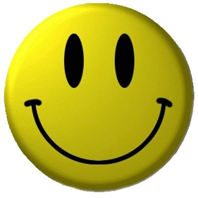
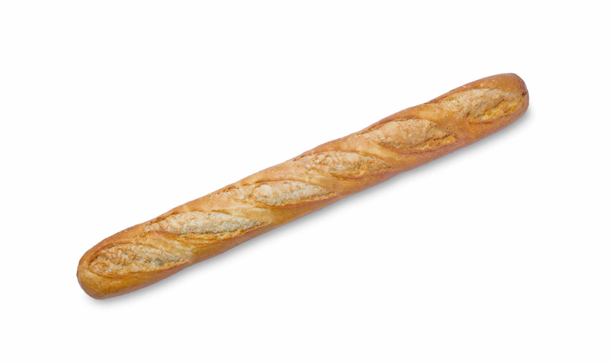
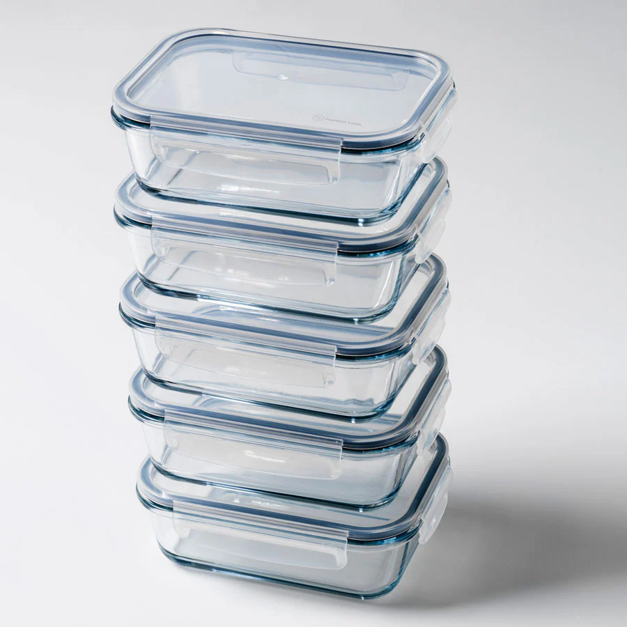
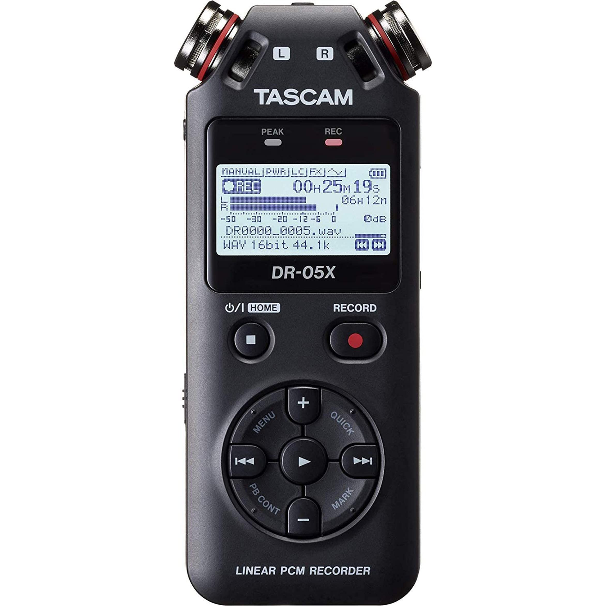

Favorite Fruit
The Humble Apple.🍎
Three Things in My Bag
  
My aims for 2024
1 — enjoy learning and doing cool things like coding a website like this
2 — express myself uniquely each day as much as possible
3 — live an awesome life!